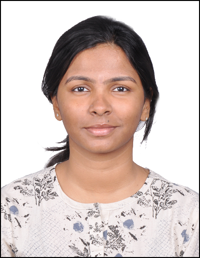

|  | Nazreen Shah Ambalath (S A Nazreen)
PhD student, |
I am a second year PhD student at IIIT, Delhi advised by Dr. Ranjitha Prasad from September 2021. I am interested in Federated Learning and my research area is to attain personalization in Federated Learning. I am also interested in Federated Optimization.
I was selected for the Prime Minister's Fellowship for Doctoral Research in July 2023.I have prior research experiences in ISI, Kolkata and IDRBT, Hyderabad, where I worked on image processing and reversible data hiding problems. My M.Tech thesis 'Reversible Data Hiding in Color Images' was completed under the guidance of Dr Rajarshi Pal, IDRBT, Hyderabad.
I completed my 5-year integrated M.Tech in Computer Science from University of Hyderabad (2020).
[Curriculum Vitae] [Google Scholar] [Linkedin][GitHub][WANDB]Over-The-Air Clustered Wireless Federated Learning
Ayush Madhan-Sohini, Divin Dominic, Nazreen Shah, Ranjitha Prasad